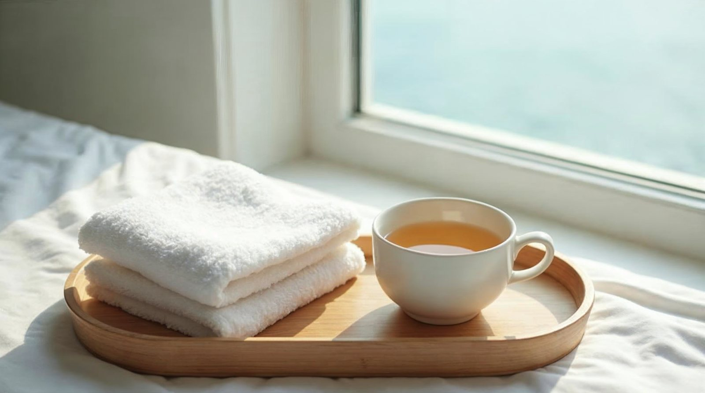
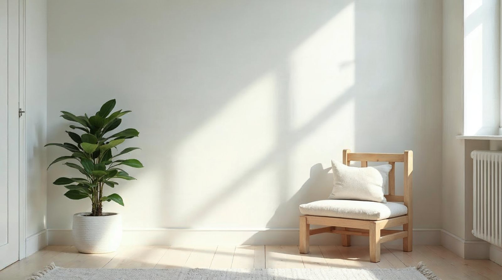

이종호 한의사 감수좋은꿈참사랑한의원 대표원장 (한의사 면허번호 19769)발행 2026-11-26 · 수정 2026-11-26
이 글의 차례
밤에 아이 방 문을 살짝 열면 드르렁 소리가 들립니다. 어른처럼 코를 고는 소리에 처음엔 웃음이 나다가, 입을 벌리고 고개를 뒤로 젖힌 채 자는 모습을 보면 마음이 쓰입니다. 아침이면 입술이 말라 있고, 일어나기 힘들어하며 짜증을 냅니다. 이불은 발끝까지 밀려나 있고 베개는 엉뚱한 곳에 가 있습니다. 밤새 편히 자지 못했다는 흔적이지요.
진료실에서 코골이 아이를 둔 부모님은 "이비인후과에서 아데노이드가 크다고 하던데, 수술을 해야 하나요?"라는 질문을 많이 하십니다. 수술이라는 말이 나오면 마음이 무거워지시지요. 그 결정은 이비인후과 선생님과 충분히 상의해서 정할 일이고, 그 사이에 부모님이 알아 두시면 좋은 것들이 있습니다.
아이 코골이는 대개 코 뒤쪽의 아데노이드나 목의 편도가 커서, 혹은 비염으로 코가 막혀서 생깁니다. 숨길이 좁아지면 공기가 지나가며 떨리는 소리가 나고, 코로 숨쉬기 어려우니 입을 벌리게 됩니다. 이것이 잠의 질과 낮 생활까지 흔들 수 있어 그냥 지나치지 않으셨으면 합니다.
저는 코골이 아이를 볼 때 밤의 소리만큼 낮의 모습을 여쭙니다. 아침에 개운하게 일어나는지, 낮에 졸거나 집중을 못 하지는 않는지, 입맛과 키 자람은 어떤지요. 밤의 숨이 아이의 낮 하루를 만들기 때문입니다.
아데노이드와 편도는 무엇인가요?
아데노이드는 코 안쪽 깊숙이, 코와 목이 만나는 곳 위쪽에 있는 림프 조직입니다. 목 양쪽에 보이는 편도와 함께 입과 코로 들어오는 세균과 바이러스를 처음 만나 몸을 지키는 역할을 합니다.
이 조직은 아이 때 가장 커지는 경향이 있습니다. 대개 서너 살에서 예닐곱 살 무렵 크기가 커졌다가, 자라면서 점점 줄어듭니다. 그런데 이 시기 아이의 코와 목은 아직 좁아서, 아데노이드와 편도가 조금만 커도 숨길이 쉽게 좁아집니다.
감기를 앓을 때마다 아데노이드와 편도는 일을 하느라 부어오릅니다. 감기가 잦으면 붓기가 다 가라앉기 전에 다음 감기가 와서, 늘 커진 상태로 머물기도 합니다. 그래서 감기가 많은 계절에 코골이가 더 심해지는 아이가 많습니다.
왜 아이들은 코를 골고 입을 벌리고 잘까요
아데노이드가 크면 코 뒤쪽 통로가 좁아져 코로 숨쉬기가 어려워집니다. 아이는 자연스럽게 입을 벌려 숨을 쉬고, 잠이 들어 목 근육이 느슨해지면 좁아진 숨길에서 공기가 떨리며 코골이 소리가 납니다.
비염이 함께 있으면 코 안쪽 점막까지 부어 숨길은 더 좁아집니다. 알레르기 비염이 있는 아이, 감기를 자주 앓는 아이, 집 안 공기가 건조하거나 먼지가 많은 환경에서 지내는 아이에게 코골이가 잦은 이유입니다.
몸무게가 많이 늘어 목 주위에 살이 붙은 경우에도 숨길이 좁아질 수 있습니다. 반듯이 누워 자는 자세도 혀와 목의 조직이 뒤로 처져 코골이를 키우기도 합니다.
한의학에서는 이런 아이를 두고 코와 목의 막힘, 그리고 감기를 이겨 내는 바탕의 힘을 함께 봅니다. 감기만 걸리면 코가 오래 막히는 아이, 열이 쉽게 오르고 편도가 자주 붓는 아이, 입이 짧고 쉽게 지치는 아이는 같은 코골이라도 살피는 방향이 조금 다릅니다.
낮에 보이는 신호도 함께 봐 주세요
밤에 숨길이 좁아지면 아이는 깊이 잠들지 못하고 자주 뒤척입니다. 잠을 오래 잤는데도 아침에 일어나기 힘들어하고, 낮에 짜증이 늘거나, 집중을 못 하고 산만해 보이기도 합니다. 어른은 피곤하면 졸지만 아이는 오히려 들뜨고 부산스러워지는 경우가 많습니다.
입으로 숨 쉬는 습관이 오래가면 입술과 목이 자주 마르고, 아침에 목이 아프다고 하거나 입냄새가 나기도 합니다. 낮에도 입을 벌리고 있는 모습이 자주 보입니다.
입맛이 줄고 먹는 속도가 느린 아이도 있습니다. 코로 숨쉬기 어려우면 씹으면서 숨을 쉬기 힘들어 먹는 일이 수고로워지기 때문입니다. 밤에 소변 실수가 이어지는 아이 가운데 코골이가 함께 있는 경우도 있어 함께 여쭙습니다.
단순한 코골이와 수면 무호흡은 어떻게 다른가요?
가끔 감기에 걸렸을 때만 코를 골고 평소에는 조용히 자는 아이라면 크게 걱정하지 않으셔도 되는 경우가 많습니다. 반면 거의 매일 밤 코를 골고, 숨이 잠깐씩 멈췄다가 컥 하고 다시 쉬거나, 숨쉬기 힘들어 자세를 자꾸 바꾸며 잔다면 수면 무호흡을 의심해 볼 수 있습니다.
수면 무호흡이 있으면 잠의 질이 크게 떨어져 낮 생활과 자람에 영향을 줄 수 있습니다. 이런 모습이 보이면 이비인후과나 수면 검사를 하는 곳에서 확인받아 보세요. 검사 결과에 따라 지켜볼지, 약을 쓸지, 수술을 고려할지 정하게 됩니다.
아데노이드와 편도 수술은 숨이 많이 막히는 정도, 중이염이나 편도염의 반복 여부, 잠과 자람에 미치는 영향을 함께 보고 정합니다. 그 결정은 이비인후과 선생님과 충분히 이야기 나누고 하시면 됩니다.
집에서 자는 모습을 어떻게 살펴보나요?
아이가 잠든 지 한두 시간쯤 지나 깊이 잘 때, 휴대폰으로 1~2분 정도 소리와 모습을 함께 찍어 보세요. 가슴이 오르내리는 모양과 숨소리, 입을 벌렸는지가 함께 보이도록 찍으면 진료에 큰 도움이 됩니다.
찍을 때는 코골이 소리가 일정한지, 중간에 조용해졌다가 컥 하며 다시 시작되는지, 숨 쉴 때 배와 가슴이 엇갈려 움직이는지, 목을 뒤로 젖히고 자는지를 차분히 살펴봐 주세요. 하루만 찍기보다 며칠에 걸쳐 두세 번 찍으면 더 정확합니다.
입으로 숨 쉬는 습관이 오래가면
입을 벌리고 숨 쉬는 습관이 몇 년씩 이어지면 얼굴과 치아에도 영향을 줄 수 있다는 이야기가 있습니다. 혀가 아래로 처지고 입술이 벌어진 채 지내다 보면 위턱이 좁아지거나 앞니가 앞으로 나오는 쪽으로 자랄 수 있다는 것이지요.
그래서 치과 검진 때 아이가 입으로 숨을 쉰다고 말씀해 주시면 치아와 턱의 자람을 함께 살펴볼 수 있습니다. 치과에서 먼저 코 쪽을 확인해 보라는 이야기를 듣는 경우도 있습니다.
입으로 숨을 쉬면 데워지고 걸러지지 않은 공기가 바로 목으로 들어가 목이 쉽게 마르고, 편도가 자주 붓기도 합니다. 코로 숨 쉬는 시간을 조금씩 늘려 가는 것이 여러 면에서 도움이 되는 이유입니다.

비염이 함께 있다면 코부터 편하게
코골이 아이 가운데 알레르기 비염을 함께 가진 경우가 많습니다. 아침마다 재채기와 맑은 콧물이 이어지고, 눈과 코를 자주 비비는 아이라면 비염 관리만으로도 밤 코골이가 눈에 띄게 줄어드는 경우가 있습니다.
비염 약이나 코 스프레이를 처방받았다면 쓰는 방법과 기간을 처방한 선생님 안내대로 지켜 주세요. 스프레이는 고개를 살짝 숙이고 코 바깥쪽 귀 방향으로 뿌리면 코 안쪽 벽을 덜 자극합니다.
집먼지진드기와 꽃가루, 반려동물 털처럼 아이에게 맞지 않는 자극을 알고 있다면 아이 방부터 그 자극을 줄여 주세요. 잠자는 공간이 편해지면 밤의 숨도 함께 편해집니다.
수술을 상의하고 있다면
이비인후과에서 수술 이야기를 들으면 부모님은 하루에도 몇 번씩 마음이 바뀌십니다. 해야 할 것 같다가도, 아이가 어린데 굳이 해야 하나 싶기도 하지요. 이럴 때는 집에서 찍은 영상과 기록을 가지고 다시 상담받아 보시면 판단에 도움이 됩니다.
궁금한 점은 미리 적어 가세요. 수술을 하면 무엇이 달라지는지, 하지 않고 지켜보면 무엇을 살펴야 하는지, 언제 다시 보자고 하는지 같은 것들입니다. 한의원에서는 어느 쪽으로 정하시든 그사이와 그 뒤의 코와 잠, 감기 흐름을 함께 살필 수 있습니다.
먼저 이렇게 여쭙니다
처음 오시면 대략 이런 순서로 여쭙니다. 미리 생각해 오시면 이야기가 수월해집니다.
- 코골이가 시작된 때와 일주일에 코를 고는 날의 수
- 자다가 숨이 멈추는 듯한 모습이 있는지
- 아침에 일어나는 모습과 낮의 졸림, 짜증, 집중
- 비염이나 잦은 감기, 중이염, 편도염이 함께 있는지
- 이비인후과에서 들은 아데노이드와 편도 크기
- 입맛, 키와 몸무게의 변화, 밤 소변 실수
모든 질문에 정확히 답하지 못하셔도 괜찮습니다. 자는 모습 영상 한두 개와 진료 기록만 가져오셔도 이야기의 절반은 시작된 셈입니다.
일상에서 먼저 해 볼 수 있는 것
코골이를 줄이는 일은 코를 편하게 하고, 감기를 덜 자주 앓게 하며, 잠자리 환경을 정리하는 일과 이어집니다. 아래 가운데 할 수 있는 것부터 골라 보세요.
- 잠들기 전 식염수로 코를 부드럽게 씻어 내기
- 이불과 베개 커버를 자주 빨고, 방의 인형과 쿠션 줄이기
- 방 습도를 너무 건조하지 않게, 너무 덥지 않게 맞추기
- 반듯이 눕기보다 옆으로 누워 자는 자세 도와주기
- 바깥에서 돌아오면 손 씻기와 양치, 코 풀기
- 낮에 입을 다물고 코로 숨 쉬는 연습을 놀이처럼 하기
옆으로 누워 자도록 등 뒤에 길쭉한 쿠션을 대 주면 자세가 오래 유지되는 아이가 있습니다. 억지로 고쳐 눕히기보다 아이가 편하게 뒤척일 수 있게 해 주세요.
코로 숨 쉬는 연습은 입에 물을 한 모금 머금고 삼키지 않은 채 잠깐 코로 숨 쉬어 보기, 풍선 불기, 빨대로 탁구공 밀기처럼 놀이로 하면 아이도 즐겁게 따라 합니다. 다만 코가 많이 막힌 날에는 무리하지 마세요.
한의원에서 함께 살필 수 있는 경우
- 감기만 걸리면 코가 오래 막히고 코골이가 심해지는 경우
- 비염이 함께 있어 코와 몸 전체를 살피고 싶은 경우
- 편도가 자주 붓고 열이 나며 감기 뒤 회복이 더딘 경우
- 밤에 자주 뒤척이고 아침에 개운하지 않으며 입맛이 줄어든 경우
- 이비인후과에서 지켜보자는 말을 듣고 그사이 생활을 함께 챙기고 싶은 경우
좋은꿈참사랑한의원에 오시면 맥을 짚고 코와 목, 숨소리를 살핀 뒤 잠과 입맛, 감기 흐름, 대변을 함께 여쭙니다. 진찰한 내용을 바탕으로 집에서 바꿔 볼 것 하나와 함께 지금 아이에게 맞는 방법을 정합니다.
한약을 상의할 때는 아이의 나이와 체중, 지금 쓰는 코 스프레이나 약을 모두 확인하고 신중하게 정합니다. 침이 필요하다고 판단되면 짧고 가볍게 진행하며, 아이가 싫어하면 다른 방법을 찾습니다. 이비인후과 진료와 검사는 그대로 이어 가시면서 나란히 살핀다고 생각해 주시면 됩니다.
이렇게 기록해 오시면 상담이 쉬워집니다
코골이는 감기와 계절에 따라 오르내리기 때문에, 몇 주의 흐름을 적어 두면 많은 것이 보입니다. 2~4주 정도만 간단히 적어 보세요.
- 코를 곤 날과 소리의 크기(작게, 크게)
- 숨이 멈추는 듯한 모습이 있었던 날
- 잠든 시각과 일어난 시각, 아침 컨디션
- 감기 기운이나 코막힘이 있던 날
- 낮에 졸거나 짜증이 많았던 날
- 자는 모습을 찍은 짧은 영상
빠진 날이 있어도 괜찮습니다. 기록을 나란히 놓고 보면 코골이가 심했던 날과 생활 사이의 연결이 보이기 시작하고, 그것이 다음 걸음을 정하는 실마리가 됩니다.

조용한 밤을 함께 늘려 가기
아데노이드는 자라면서 작아지는 경우가 많아서, 아이의 코골이도 시간이 지나며 줄어드는 흐름을 보이기도 합니다. 그 시간 동안 코를 편하게 하고, 감기를 덜 앓게 하며, 잠을 잘 지켜 주는 것이 부모님이 하실 수 있는 일입니다.
코골이 소리가 작아진 밤, 아침에 스스로 일어난 날, 낮에 짜증이 줄어든 날을 기록에 함께 표시해 보세요. 그런 날이 늘어 가는 것이 아이의 숨이 편해지고 있다는 가장 분명한 신호입니다.
이번 주에는 잠들기 전 식염수로 코 씻기 하나만 정해 보세요. 양치하고 나서 바로 하면 잊지 않고 이어 가기 쉽습니다. 그리고 자는 모습 영상을 한 번 찍어 두세요. 다음에 오시면 그 영상과 기록부터 함께 살펴보겠습니다.
이런 증상은 먼저 확인이 필요합니다
- 목이 심하게 부어 침을 삼키지 못하고 흘리며 숨쉬기 힘들어하는 경우
- 자다가 숨이 멎었다가 몰아쉬며 입술이 파래지거나 깨워도 잘 깨지 않는 경우
이런 신호가 있으면 한의원보다 가까운 병원이나 응급실을 먼저 찾으세요.
함께 읽으면 좋은 글
- 아이가 자면서 코를 골고 입으로 숨 쉴 때는 어떻게 살피나요?
- 아이가 아침마다 재채기와 맑은 콧물, 코막힘을 달고 사는 알레르기 비염은 어떻게 살피나요?
- 편도염이 자꾸 반복될 때, 목이 붓고 열이 나는 일을 줄이려면 무엇을 살피나요?
- 자고 일어나면 입이 바짝 마르고 목이 칼칼할 때는 어떻게 살피나요?
- 아이가 산만하고 집중을 못 해 ADHD가 걱정될 때, 부모는 무엇을 먼저 살피나요?

여쭙는 것
- 코골이가 시작된 때와 일주일에 코를 고는 날의 수
- 자다가 숨이 멈추는 듯한 모습이 있는지
- 아침에 일어나는 모습과 낮의 졸림, 짜증, 집중
생활에서 해 볼 것
- 잠들기 전 식염수로 코를 부드럽게 씻어 내기
- 이불과 베개 커버를 자주 빨고, 방의 인형과 쿠션 줄이기
- 방 습도를 너무 건조하지 않게, 너무 덥지 않게 맞추기
한의원에서 함께 살필 것
- 감기만 걸리면 코가 오래 막히고 코골이가 심해지는 경우
- 비염이 함께 있어 코와 몸 전체를 살피고 싶은 경우
- 편도가 자주 붓고 열이 나며 감기 뒤 회복이 더딘 경우
먼저 확인이 필요한 신호
- 목이 심하게 부어 침을 삼키지 못하고 흘리며 숨쉬기 힘들어하는 경우
- 자다가 숨이 멎었다가 몰아쉬며 입술이 파래지거나 깨워도 잘 깨지 않는 경우
한눈에 보는 표
| 구분 | 핵심 |
|---|---|
| 여쭙는 것 | 코골이가 시작된 때와 일주일에 코를 고는 날의 수 자다가 숨이 멈추는 듯한 모습이 있는지 |
| 생활에서 해 볼 것 | 잠들기 전 식염수로 코를 부드럽게 씻어 내기 이불과 베개 커버를 자주 빨고, 방의 인형과 쿠션 줄이기 |
| 한의원에서 함께 살필 것 | 감기만 걸리면 코가 오래 막히고 코골이가 심해지는 경우 비염이 함께 있어 코와 몸 전체를 살피고 싶은 경우 |
| 먼저 확인이 필요한 신호 | 목이 심하게 부어 침을 삼키지 못하고 흘리며 숨쉬기 힘들어하는 경우 자다가 숨이 멎었다가 몰아쉬며 입술이 파래지거나 깨워도 잘 깨지 않는 경우 |
자주 묻는 질문
아데노이드가 크다고 하면 수술을 해야 하나요?
숨이 막히는 정도, 중이염이나 편도염의 반복, 잠과 자람에 미치는 영향을 함께 보고 이비인후과 선생님과 상의해 정합니다. 지켜보며 경과를 보는 경우도 많습니다.
아이가 코를 골면 키 자람에도 영향이 있나요?
잠이 자주 깨고 얕아지면 깊은 잠이 줄어 영향을 줄 수 있다는 이야기가 있습니다. 코골이가 잦고 낮에 지쳐 보인다면 이비인후과에서 잠의 질을 확인받아 보세요.
입 테이프를 붙이고 재워도 되나요?
코가 막힌 아이에게 입을 막으면 숨쉬기 어려워질 수 있습니다. 아이에게 쓰는 것은 권하지 않으며, 먼저 코막힘의 이유를 살피는 것이 좋습니다.
아이도 한약을 먹을 수 있나요?
아이의 나이와 체중, 지금 쓰는 약을 모두 확인한 뒤 신중하게 정합니다. 진찰 후 필요하다고 판단될 때 상의하며, 먹기 어려워하면 다른 방법을 함께 찾습니다.
코골이는 자라면 저절로 좋아지나요?
아데노이드는 자라면서 작아지는 경우가 많아 코골이가 줄어드는 아이도 많습니다. 다만 그 사이 잠의 질이 크게 떨어진다면 이비인후과와 함께 살펴보시는 것이 좋습니다.
좋은꿈참사랑한의원은 재진 때 지난번 이야기부터 이어서 여쭙니다. 진료시간과 예약은 오시는 길에서 확인하세요.
어디서 상담받을 수 있나요?
좋은꿈참사랑한의원은 서울 동작구 만양로2길 2 신성빌딩 3층·5층(서울 동작구 상도동, 7호선 상도역 3번 출구 근처)에 있습니다. 한의사 3명(이종호 대표원장, 조영기 수석진료원장, 정원영 진료원장)이 진료합니다. 진료시간은 평일 09:30~20:00(점심 13:00~14:00), 토·일·공휴일 09:30~15:00이며, 방문 전 전화로 확인을 권합니다. 예약은 네이버 예약, 카카오톡 상담, 전화 02-815-7510로 받습니다.
이 글은 일반적인 건강 정보이며 개인의 진단이나 치료를 대신하지 않습니다. 증상이 있거나 복용 중인 약이 있다면 진료를 통해 확인하세요. 치료 효과는 개인마다 다를 수 있습니다.
작성 기준: 일반적으로 알려져 있는 건강 정보를 참고해 정리했습니다(대표원장 감수). 증상 기록은 1~2주 동안 하루 1회, 비슷한 시간에 적어 오시면 지난 상태와 비교하기 쉽습니다.